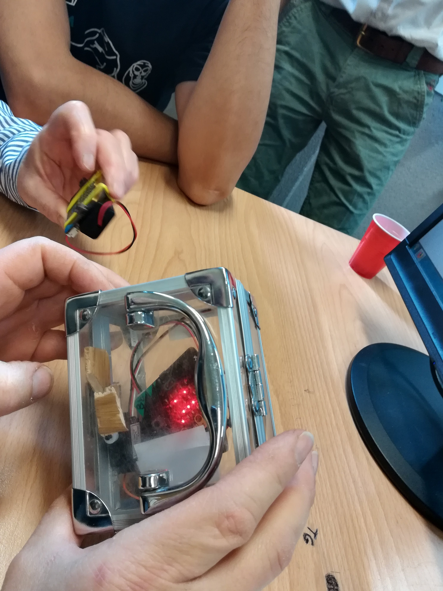

Les objets connectés
Barcamp Code

Présentation
Animateurs d’atelier
Qui ?
Bruno Bourgine & Pascal Padilla
Quoi ?
Professeurs de Mathématiques et Sciences Physiques en Lycée Professionnel
Où ?
IREM Marseille
Groupe InEFLP
Innovation
Formes scolaires innovantes
Expérimentation
Micro-contrôleur
Formation
Algorithme
À propos de cet atelier
Programmer des objets connectés pour faire des maths.
- Comprendre les objets de notre environnement.
- Des objets pour mesurer et communiquer.
- Des objets pour faire des maths.
Déroulement de cet atelier
(théorique)
- Découverte du Micro:bit
- La programmation par bloc
- La programmation en Python
Micro:Bit

 


Petit quizz !
Ouvrir le lien utile Quizz de la page

À propos du tirage aléatoire
Discussion :
- quel intéret ?
- quelle plus-value ?
Programmation par blocs
Makecode
- interface en ligne https://makecode.microbit.org/
- programmation par bloc ou en javascript
- simulateur
Petit quizz !
Ouvrir le lien utile Quizz de la page
Programmation Python

Afficher un texte
from microbit import *
display.scroll("Hello,")
display.show("World!")Terminal et sortie graphique
from microbit import *
import random
nb1 = 0
total = 0
for i in range(100):
tirage = random.randint(0,1)
total = total + 1
nb1 = nb1 + tirage
nb0 = total - nb1
print((nb1/total, nb0/total))
sleep(5)Des images
from microbit import *
display.show(Image.HAPPY)
sleep(1000)
display.show(Image.ANGRY)
sleep(1000)
display.clear()Les boutons
from microbit import *
sleep(10000)
display.scroll(str(button_a.get_presses()))Le mouvement
from microbit import *
while True:
capteur = accelerometer.get_x()
if capteur > 40:
display.show(Image.ARROW_E)
elif capteur < -40:
display.show(Image.ARROW_W)
else:
display.show("-")Les gestes
from microbit import *
import random
button_b.was_pressed()
while True:
display.show("8")
if accelerometer.was_gesture("shake"):
display.clear()
sleep(1000)
display.scroll(random.choice(["Oui","Non"]))
if button_b.was_pressed():
display.clear()
breakLa radio
from microbit import *
import radio
import random
while True:
if button_a.was_pressed():
radio.send("A")
if button_b.was_pressed():
radio.send("B")
# récepteur
incomming = radio.receive()
if incomming == "A":
display.scroll("A")
if incomming == "B":
display.scroll("B")
sleep(20)Petit quizz !
Ouvrir le lien utile Quizz de la page
http://url.univ-irem.fr/C/
Activité de recherche
Problématique
On utilise une boucle de n itérations pour allumer aléatoirement les diodes du Micro:bit.
Combien d’itérations sont nécessaires pour allumer toutes les diodes ?
Merci
Groupe InEFLP
Innovation
Formes scolaires innovantes
Expérimentation
Micro-contrôleur
Formation
Algorithme